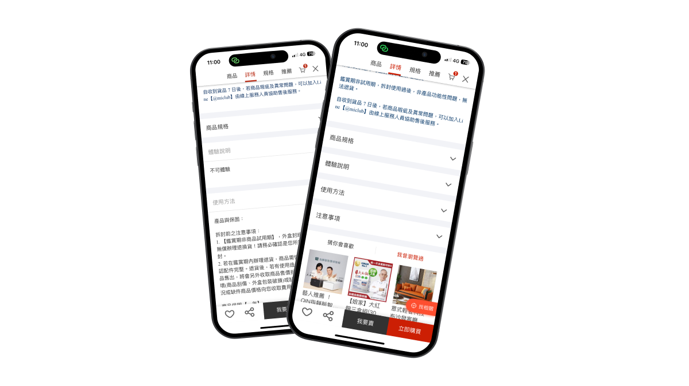
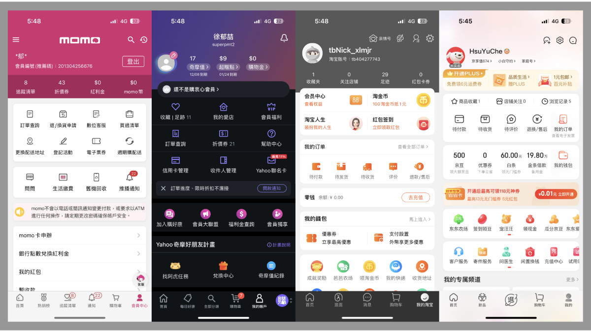
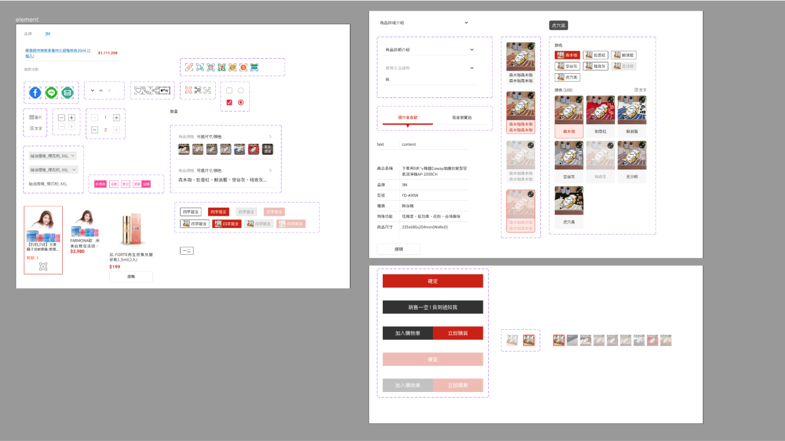

訂單查詢及商品頁配置優化

專案簡介
由其他部門提供的使用者回饋，並且由設計調整部分產品頁面，來解決使用者的痛點，由UI設計的部分主要包括了商品頁、會員中心首頁。
我的角色
因此次專案是由其他部門提供，所以這次主要是擔任UI設計，並擔任需求端與工程師之間的橋樑。
我在此專案做了
- 協助需求端與工程師之間的溝通討論，爭取更多頁面優化的空間，滿足使用者回饋的諸多通點
- 優化頁面部分資訊，並且讓使用者能夠快速開啟瀏覽
- 調整優化會員中心內的功能按鈕，凸顯呈現方式
專案介紹
- 項目背景 公司的客服部門經過長時間的收集，將使用者的回饋歸納整理後提出了一份產品優化的報告，因報告內容不僅是介面的呈現，還有部分的商業策略，不過在此謹呈現介面相關的議題。
- 相關問題 報告內容與UI相關的，主要是在述說商品頁的頁面長度，讓使用者有種滑不完的感覺；另外在會員中心裡的訂單查詢功能，呈現上並不明顯意見，使用者時常會花時間尋找。
-
相關問題
再經過幾次的開會後，關於UI介面的部分，我提供了幾點建議：
- 將不需要第一次進來就需讓使用者知道的資訊隱藏起來，並設置開關讓使用者主動開起瀏覽。
- 提供幾種樣式版本供需求端選擇，並與研發討論可行性，凸顯主要相關資訊。
相關研究及參考
在收集的資料中，分析了幾個相關頁面，整理出以下幾個優化重點方向，
-
商品頁部分：
- 可使用半透明的遮罩來隱藏，並新增按鈕開啟
- 使用手風琴的功能
- 彈窗呈現
-
會員中心部分：
- 變更字體顏色及粗細
- 增加區塊讓該項目看起來較為凸顯

參考畫面
設計系統
- 設計及定義商品頁、會員中心頁查詢訂單的呈現方式
- 提供設計稿及標注檔，並與研發討論相關細節

設計元件
結果
雖然案子最後有些關於設計的部分不盡人意，但因時程及資源有限，所以就只能以最小可行性出發，而且重點是能解決使用者的痛點為主，所以就結果來說是不錯的，不過也會持續傾聽更多使用者的痛點，並更積極的跟其他部門合作，提供更好的產品給使用者。